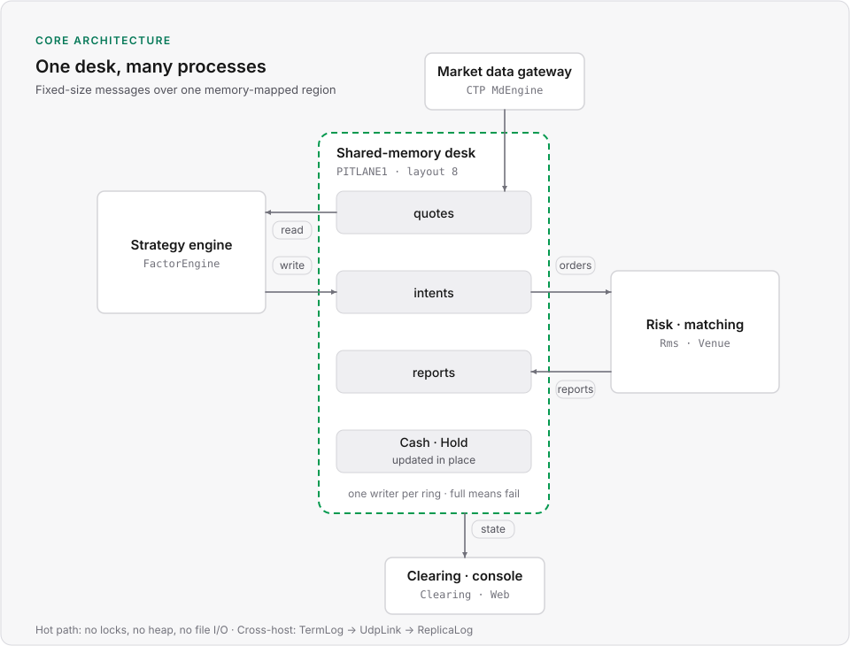

Architecture

One file mapping (PITLANE1, kDeskVersion 8) holds the rings and the cash/hold rows. desk_view attaches only when the magic and layout match; every ring then has a single writer and one cursor per reader. A write to a full ring fails and leaves the ring unchanged — nothing grows and no unacked slot is overwritten. The sections below open that mapping, publish and read messages, run the session loop, and put orders through the paper venue.